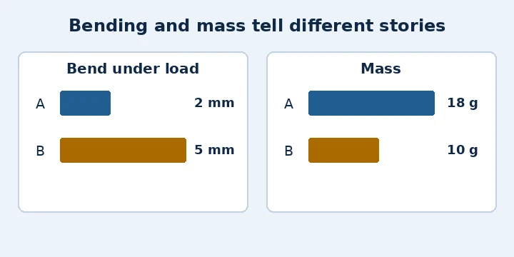

Material Properties and Selection
45 minutes · 10 points
Today’s Goal
Compare two materials and defend a choice for a ride part using two criteria.
Learn and see a demonstration (10 min), work (30 min), then submit and clean up (5 min).
Learn the Concept
A criterion is a feature you judge, such as low mass or high stiffness. A constraint is a limit you must satisfy, such as materials the class can cut safely. A trade-off occurs when one choice helps one criterion but is less suitable for another. Flexibility means a part can bend readily under a load.
Worked Example


- Sample A
- Bends 2 mm · Mass 18 g
- Sample B
- Bends 5 mm · Mass 10 g
- Decision
- Use A for the upright. It bends 3 mm less under the same load, at a cost of 8 g extra mass. The samples are the same size.
What to Do
Choose a material for a Swing Ride
Pick either the shaft support, which needs to hold the shaft in place, or the decorative seat panel, which carries no rider or load and should add as little mass as possible.
Safety: Use the practice data below or a matched set of class measurements. Ask your teacher before handling any samples or applying a load.
- Set a priority (5 min). Name your part and decide which matters more for its job: resisting bending or keeping mass low.
- Compare (15 min). Make a two-row table with columns for Sample, Bend under load (mm), and Mass (g). Enter both samples. Mark which one bends less and which one has less mass.
- Decide (10 min). Choose a sample for your part. Use one number to explain how it meets your priority and another to show what you give up.
Practice data: Both samples are the same size and tested with the same load in the same setup. Both are allowed for this model.
| Sample | Bend (mm) | Mass (g) |
|---|---|---|
| C | 3 | 16 |
| D | 7 | 9 |
What to Submit
Submit one typed page or one clear notebook photo through the Lesson 4.2 assignment in Google Classroom. Include your name, chosen part, two-row table with units, and a two-sentence decision.
Sentence starters: I chose Sample ___ for the ___ because ___ matters most and the data show ___. The trade-off is ___.
Optional extension · up to +2 points
Change the design priority
Keep your two samples. Imagine the other criterion now matters more. Write one sentence choosing a sample under that new priority and one sentence explaining the trade-off using your data.
Add your extension to the same submission under Extension.
+1 point: State the new priority and your choice.
+1 point: Use the numbers to explain what you gain and give up.
Check Your Work
Can you point to one number that supports your choice and another that shows its drawback? Compare bending only when the samples were the same size and tested under the same conditions.
10-point rubric
- 4 points · Completion. Include your chosen part, two complete sample rows, and both decision sentences.
- 4 points · Engineering accuracy. Interpret the bending and mass data correctly, use numbers to support your choice, and explain the trade-off.
- 2 points · Clarity. Label your table with units, include your name, and make the single file easy to read.
Finish the practice check to mark your work ready.